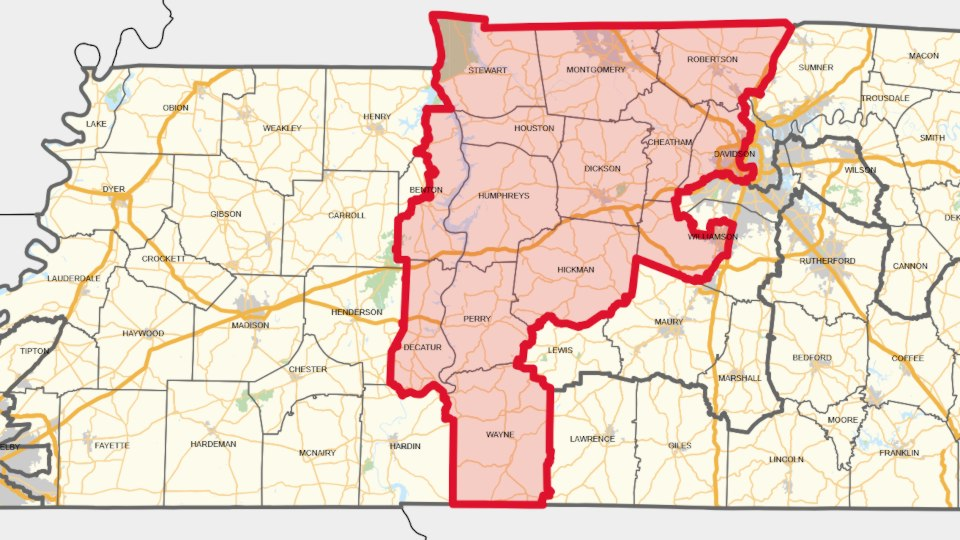

Last night, we had an election for who would represent Tennessee’s 7th congressional district at the federal level. This election was for a seat in the House of Representatives.
It was a very closely watched election because it is a bellwether of just how satisfied voters are with the right-wing politicians currently in power.
While Virginia and New York were very successful for Democrats (the left-wing), with someone who has voiced support for defunding the police (yes, he apologized for this later) winning the New York mayoral race.
While these were notable victories for Democrats in 2025, both happened in very blue states: Virginia last voted a Republican for president in 2004 and we have to go all the way back to 1984 to find New York voting for a Republican. One could make the argument that these victories mainly show greater polarization in today’s social-media driven political climate, with blue voters voting more blue. Perhaps red voters will vote more red come the midterms next year.
Or maybe not.
Tennessee’s 7th congressional district is very red; the last two congressional elections have been 60-38% blowouts, with the blue (Democrat) candidate losing by 22 points. So, if the polarization theory is true, we would expect the blue candidate to lose by even more points, perhaps having a 65-33% blowout.
That’s not what happened.
While Matt Van Epps did win, it was not a blowout. It was a 54-45% victory, with him leading only by 9 points in a district where Republicans have previously won by over 20 points. At one point, there was even a blue mirage, where the blue candidate was actually leading Van Epps by over five points.
The Democrat’s (i.e. blue) candidate, one Behn, is no blue dog moderate. She has chased ICE agents, filming confrontations with them.
Indeed, one very left-leaning site says that this looks really bad for Republicans, and with good reason: A nationwide 15-point move leftward would be a bloodbath for Republicans in the midterms next year.
Based on the elections we have had this year, it looks like a blue tide is rising after Trump’s victory in 2024.
The picture of Tennessee’s district is CC BY-SA 4.0 licensed, and has been altered. Attribution: An anonymous person with the handle “Twotwofourtysix”.